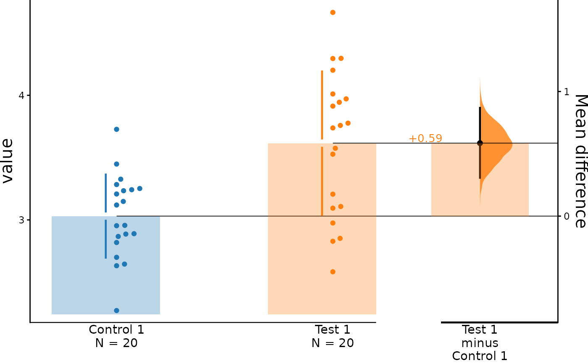

Produces a Gardner-Altman estimation plot or a Cumming estimation plot depending on whether float_contrast is TRUE. The plot presents all datapoints as a swarmplot, which orders each point to display the underlying distribution. It also presents the effect size as a bootstrap 95% confidence interval (95% CI) on a separate but aligned axes.
Arguments
- dabest_effectsize_obj
A dabest_effectsize_obj created by loading in a dabest_obj along with other specified parameters with the
effect_size()function.- float_contrast
Default TRUE. If TRUE, a Gardner-Altman plot will be produced. If FALSE, a Cumming estimation plot will be produced.
- ...
Adjustment parameters to control and adjust the appearance of the plot. (list of all possible adjustment parameters can be found under plot_kwargs)
Examples
# Loading of the dataset
data(twogroup_data)
#> Warning: data set ‘twogroup_data’ not found
# Preparing the data to be plotted
dabest_obj <- load(non_proportional_data,
x = Group, y = Measurement,
idx = c("Control 1", "Test 1")
)
dabest_obj.mean_diff <- mean_diff(dabest_obj)
# Plotting an estimation plot
dabest_plot(dabest_obj.mean_diff, TRUE)
